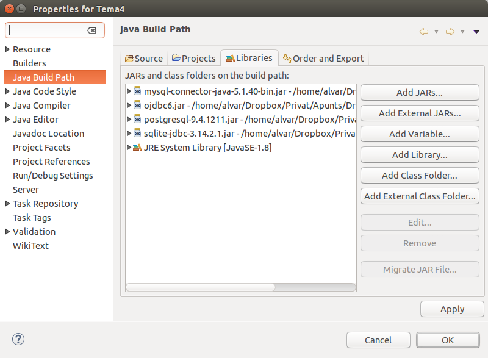

5 - Iniciació a l'API JDBC
Ara veurem els elements bàsics de l’API JDBC que permeten a les aplicacions Java comunicar-se amb un SGBD fent servir el llenguatge SQL. Cal que disposeu del connector JDBC dels 4 SGDB que anem a utilitzar: PostgreSQL, Oracle, MySQL i SQLite. I també que els afegiu a les biblioteques del vostre projecte. També serà necessari que habiliteu una connexió per consultar la Base de Dades des de la perspectiva Database Development (com les que hem creat en el punt anterior).
Per tal de poder practicar la connexió i accedir a les dades, tenim una Bases de Dades de prova en cada SGBD:
- PosgreSQL: geo_ad (contrasenya: geo_ad)
- Oracle: scott (contrasenya: tiger)
- MySQL: factura (contrasenya: factura)
- SQLite: proveta.sqlite, però en realitat crearem les Bases de Dades que ens facen falta
Crearem un projecte nou anomenat Tema4, per exemple, i li afegirem els controladors JDBC de PostgesSQL, Oracle, MySQL i SQLite com a biblioteca del projecte. Per a separar les proves dels exercicis, ens creem un paquet anomenat Exemples.
Els drivers o controladors us els podeu baixar sense problemes. Són fàcils de trobar, únicament amb un buscador posar jdbc i el Sistema Gestor de Bases de Dades (per exemple jdbc postgresql). De tota manera, per més comoditat, teniu una carpeta en el curs de Moodle amb tots els drivers que ens fan falta
En la següent imatge es veu com hem incorporat els drivers al projecte (es fa en les propietats del projecte, secció Java Build Path, pestanya Libraries, amb el botó Add Extetrnals JARs...)

En els punts següents anem a comentar cada cosa per separat, pas a pas. De tota manera, posem la llista inicial de classes que utilitzarem per a poder connectar i accedir a la Base de Dades:
| Classe | Descripció |
| Driver | Permet connectar a una Base de Dades |
| DriverManager | Permet gestionar tots els drivers instal·lats al sistema |
| Connection | Representa una connexió amb una BD. En una aplicació pot haver més d'una connexió |
| Statement | Permet executar sentències SQL sense paràmetres |
| PreparedStatement | Permet executar sentències SQL amb paràmetres |
| ResultSet | Conté les files resultants d'executar una sentència SELECT |
| DatabaseMetadata | Proporciona informació d'una BD, com per exemple les taules que conté |
| ResultSetMetadata | Proporciona informació sobre un ResultSet: número de columnes, noms de les columnes, tipus, ... |
Llicenciat sota la Llicència Creative Commons Reconeixement CompartirIgual 2.5